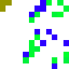
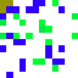
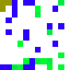
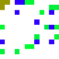
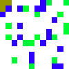

(Generation 0 Elite Pool)
(Generation 25 Elite Pool)
(Generatoin 49 Elite Pool)


We use a genetic algorithm to generate adversarial environments for a multi-agent foraging simulation. Explore some of our results below!
Ants (purple) spawn from a hive in the upper left corner (yellow). Ants can collect food by walking to a food cell (green) and then returning to the hive. Ants can't walk through obstacles (blue).
To measure the difficulty of an environment, we used the food collected per agent (FPA).
Simulation examples of our algorithms on environments of varying difficulty. (Note that these are just illustrative examples for seeing how the algorithms work and are not representative of overall GA performance.)
Takes random steps and lays random pheromone levels.
|
Easy: 4.8 FPA (Generation 0 Elite Pool) |
Medium: 3.4 FPA (Generation 25 Elite Pool) |
Hard: 1.8 FPA (Generatoin 49 Elite Pool) |
|
|
|
|
Follows a more traditional swarm foraging algorithm.
|
Easy: 4.2 FPA (Generation 0 Elite Pool) |
Medium: 1.4 FPA (Generation 15 Elite Pool) |
Hard: 0 FPA (Generatoin 20 Elite Pool) |

|

|
 |
Trained with a DQN on randomly generated grids.
|
Easy: 3.8 FPA (Generation 5 Elite Pool) |
Medium: 0.4 FPA (Generation 15 Elite Pool) |
Hard: 0.2 FPA (Generatoin 5 Elite Pool) |
|  |  |  |
Improved DQN co-evolved with the genetic algorithm, rerun on the same grids from the default DQN GA run.
|
Easy: 5.2 FPA (Generation 0 Elite Pool) |
Medium: 1.2 FPA (Generation 5 Elite Pool) |
Hard: 0 FPA (Generatn 15 Elite Pool) |
|  |  |
| RandomAgent | SwarmAgent | DQNAgent |

|

|
 |